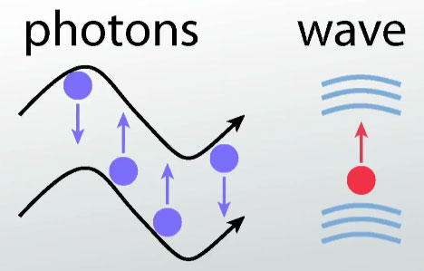

What Is Light?
Many consider light as a particle or a wave but it is, in more recent times, something inbetween that we now call photons. Photons are the quantum of the electricmagnetic (EM) field. This meaning
What Is Color Blindness?


With humans, we have blue, red, and green cones. Cones are photoreceptor cells in the retinas that respond differently to light of various wavelengths. Any missing cone(s) will equate to some sort of color blindness. Some types of colorblindness are: Red - Green color blindness, Blue - Yellow color blindness,are Total color blindness.
What Do Dogs See?

With early research, many have speculated and thought that dogs only see in black and white. For a while this has be held to be true.
However, with recent times, studies have found that dogs seems to have colorblindness similar to humans who lack green cones and are “red-green color-blind”. Blue cone and a visual pigment between red and green => Only see yellow, blue, and gray colors. However the thing that is different with dogs compared to humans is that, dogs seems to be more sensitive to light than humans.